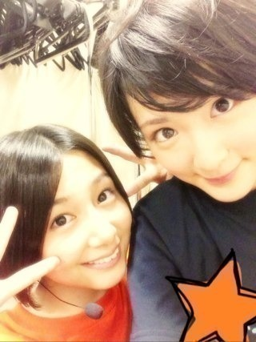

| 2013/08 20 Tue | 始まりました！ヽ(・∀・)ﾉ |
こんばんは！
みなさん元気ですか〜ヽ(・∀・)ﾉ
生駒は腹筋がいい感じについてきました！
腕もついたよ！
そして！
ついに始まりました乃木坂46真夏の全国ツアー2013ヽ(・∀・)ﾉ
初日はゼップ札幌！
札幌の！北海道のみなさんありがとうございました〜

遠征して下さった方もありがとうございました！
無事初日を迎えました！
みなさん楽しんで頂けたかな？
もちろん全力でパフォーマンスしましたが、これからもいろいろ上げていける様に頑張ります！
LIVE楽しい！
これからくる方楽しみにして下さい！
当日は一緒に暴れましょ！
もっと伝えられる人にならなければっ！
毛がにご馳走様でした。
甘エビご馳走様でした。
北海道の海鮮はすっごくうまい！うまい！
次は福岡！
リハ頑張るぞ〜ヽ(・∀・)ﾉ

そして！
この前のブログで近々生駒にとって嬉しい事があると書きました！
それはっ！
なんと！
けっ
けっっ
あのっ！
生駒の大好きなファッション誌KERAの表紙を飾ります！
初ファッション誌の表紙です！
ずーっと中学生のころからの憧れ。
メイクはなみっきーさん！
もう感激すぎてお空を飛べそうです！
9月14日発売です！
ぜひみて下さい！
かっこかわいい感じですヽ(・∀・)ﾉ
他にもいろいろ自分の好きなものに携わる事ができて、凄く嬉しいです。
でも嬉しいだけじゃなくて、それをちゃんと伝えなきゃダメだし、責任を持って取り組まなければいけないですよね！
気を引き締めて頑張ります！
みなさんのコメントちゃんとみてますよ〜
見るの好きっ！
では！
洗濯して、掃除して寝ます！
筋肉痛だけどっ！
へばなっ！